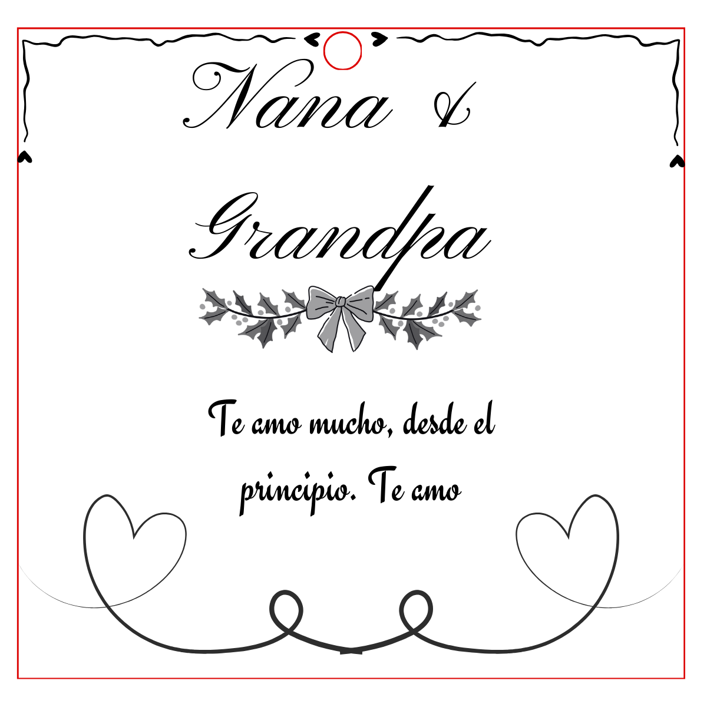
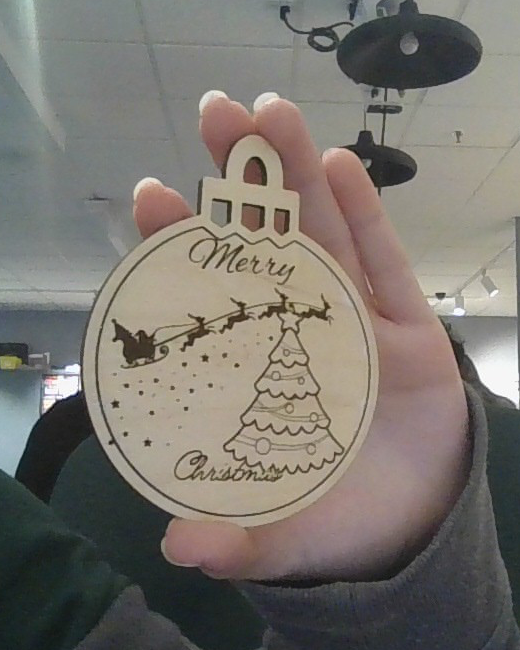

✂ Holiday Ornament · Laser Extension
DESIGN AN ORNAMENT THAT CAN BE MADE
Your file must tell the teacher where the object ends and which marks stay on the surface.
One 4 by 4 inch ornament
One teacher-checked SVG
Model, revision, photo, reflection
Read two real examples


These are two different designs. Use them to compare a digital file with a finished material result. The teacher still confirms each machine operation before fabrication.
The file-to-material chain
Path, outline, fill, or image
Cut, score, or engrave
Separate, mark, or darken
Color may help organize layers, but color alone does not run the laser. The teacher checks the imported geometry, operation, material, and settings.
Day 1 · Ideate and choose
- Sketch three different ornament ideas. Changing only the text or color does not make a new idea.
- Give every idea a closed outer shape, a hanging hole, and one readable surface detail.
- Circle the strongest idea. Complete: I chose ______ because it will remain readable at 4 inches and ______.
Word bank: outline · path · hanging hole · detail · readable · simple · contrast
Day 2 · Build, trace, revise
- Create a 4 by 4 inch page in Canva or the vector tool your teacher names.
- Build one closed outer path. Add a closed hanging hole with enough wood around it to stay strong.
- Add one or more simple details that can be scored or engraved. Avoid tiny text, hairline gaps, crowded shapes, and loose pieces.
- Export one SVG named Period-Lastname-Firstname-Ornament.svg.
- Print or trace the design at real size. Cut the paper outline and check the hole, edge strength, and readability.
- Give the paper test to a partner. Your partner traces the expected cut and surface marks. Revise anything they cannot predict.
Machine boundary
You submit the checked file. Your teacher runs the Glowforge. Do not upload to the Glowforge App, place material, change settings, or start a job unless your teacher is directing that exact step beside you.
Day 3 · Watch, finish, document
Open the print-run video on YouTube
- Hand off the SVG through the class queue.
- When your ornament is ready, add any teacher-approved finish and attach the string or ribbon.
- Photograph the finished object from directly above in good light.
Leave this screen up during work time
Today’s task
- Finish the SVG
- Test it at real size
- Complete the partner trace
- Revise and submit
Success criteria
- Closed outer path
- Strong hanging hole
- Readable surface detail
- Correct size and filename
Partner stem: I predict the machine will ______ this path and ______ this area.
Submit
- Your Period-Lastname-Firstname-Ornament.svg
- A photo of the finished ornament. If the class queue is still running, submit the real-size paper test and add the finished photo when your teacher returns the object.
Text entry: My design changed from ______ to ______ after ______. The finished ornament communicates ______ because ______.
Word bank: revised · simplified · strengthened · readable · contrast · cut · score · engrave
Five-point check
- Closed outer cut path
- Hanging hole placed safely inside the edge
- Readable scored or engraved detail
- Real-size test, revision, and correct filename
- Submitted evidence plus a specific reflection